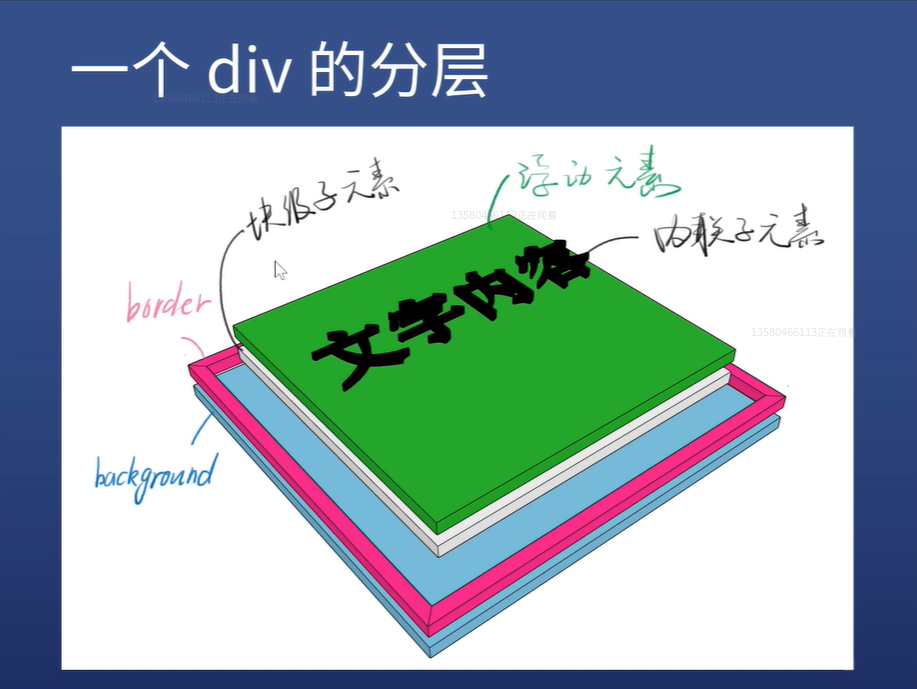

One minute
10 - [css全解]定位
问两个问题
-背景的范围是从哪到哪?(正确答案是 B)
A.border 内边沿围成的区域
B.border 外边沿围成的区域
-如何验证自己的猜想?border 半透明化
-从左边看一个 div,是什么样子?

新属性-position
a：position
1.static 默认值，待在文档流里
2.relative 相对定位，升起来，但不脱离文档流
3.absolute 绝对定位，定位基准是祖先里的非 static
4.fixed 固定定位，定位基准是 viewport(有诈)
5.sticky 粘滞定位，不好描述直接举例
经验
1.如果你写了 absolute，一般都得补一个 relative
2.如果你写了 absolute 或 fixed，一定要补 top 和 left
3.sticky 兼容性很差，主要用于面试装逼
position:relative
a：使用场景
1.用于做位移对齐(很少用，现在都直接用 display:flex 了)
2.用于给 absolute 元素做爸爸
b：配合 z-index(z-index 必须配合 position 使用，否则不生效)
1.z-index:auto 默认值，不创建新层叠上下文
2.z-index：0 | 1 | 2
3.z-index:-1 | -2
经验
1.写 z-index:9999 的都是彩笔
2.学会管理 z-index
position:absolute
a：使用场景
1.脱离原来的位置，另起一层，比如对话框的关闭按钮
2.鼠标提示
案例
b：配合 z-index
经验
1.absolute 相对于祖先元素中最近的的定位元素
2.某些浏览器如果不写 top | left 会位置错乱
3.善用 left:100%
4.善用 left:50%;加负 margin
position:fixed 相对于视口定位
a：使用场景
1.烦人的广告
2.回到顶部按钮
b：配合 z-index
经验
1.手机上尽量不要用这个属性，坑很多
层叠上下文
a：什么会创建层叠上下文[z-index / opacity]
1.每个层叠上下文就是一个作用域
3.要处于同一个作用域的 z-index 才能够比较
2.这一层层叠上下文会找到自己共同父级的层叠上下文作用域来进行比较(如果没有就默认是 html)
100 Words
2019-12-25 21:45 +0800